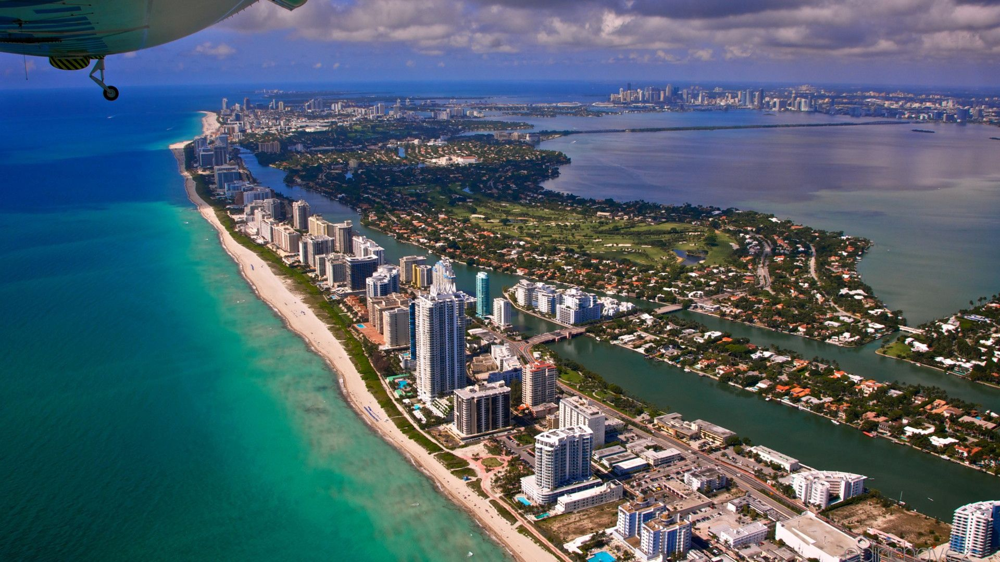

Исследуйте древние храмы Бангкока, включая знаменитый Храм Лежащего Будды. Прокатитесь на лодке по плавучим рынкам, где можно приобрести традиционные тайские сувениры. Насладитесь сафари на островах, таких как Пхукет и Ко Самуи, и узнайте больше о жизни местных жителей. Любителям природы предлагаются прогулки по национальным паркам и джунглям, где можно увидеть экзотических животных
М ы л е т а е мМы
летаем
Тайланд
Для вашего отдыха мы предлагаем комфортные отели с видом на море, уединённые бунгало в окружении тропической природы и эко-курорты. В каждом варианте проживания предусмотрены современные удобства, чтобы ваш отдых был максимально приятным.
Позаботьтесь о своём комфорте с нашими услугами трансфера, доступными для индивидуальных и групповых заказов. Также вы можете арендовать автомобиль или скутер для удобного передвижения. Для романтических путешественников — помощь в планировании свадебных церемоний под сенью тропического неба.
Гаваи
Откройте для себя мощь вулканов, отправившись на экскурсию в Национальный парк Вулканов на острове Гавайи. Для любителей активного отдыха — серфинг на легендарных пляжах Оаху и Мауи. Не пропустите поездки к водопадам и посещение традиционных гавайских деревень, чтобы познакомиться с богатой культурой островов. Предлагаются также экскурсии на лодках с прозрачным дном для наблюдения за подводным миром.
Окунитесь в атмосферу роскоши, выбирая проживание на побережье с панорамными видами на океан. Наши курортные отели оснащены расслабляющими СПА-зонами, обширными бассейнами и первоклассными ресторанами с блюдами местной кухни. Семейные виллы и уединённые дома для пар позволят насладиться приватностью и уютом, создавая идеальные условия для отдыха.
Сделайте свой отпуск незабываемым, заказав романтический ужин на пляже или вертолётный тур над потрясающими пейзажами островов. Для активных туристов доступна аренда автомобилей, чтобы исследовать острова в своём ритме.
Гватемала

Погрузитесь в историю древних цивилизаций, посетив руины майя в Тикале. Исследуйте природные сокровища, такие как озеро Атитлан и вулкан Пакая, где можно подняться на вершину и полюбоваться потрясающими видами. Узнайте больше о гватемальской культуре через экскурсии по деревням, где проводятся мастер-классы по местным ремёслам.
ОПогрузитесь в аутентичную атмосферу, останавливаясь в эко-отелях, расположенных вблизи природных достопримечательностей. Для тех, кто предпочитает городской ритм, доступны стильные гостиницы в исторических кварталах с лёгким доступом к основным культурным центрам. Вас также порадует тёплый завтрак с местными специалитетами и организованный трансфер, который сделает ваше путешествие ещё удобнее.
Ощутите культуру страны через кулинарные мастер-классы по приготовлению традиционных блюд. Опытные гиды-переводчики сделают ваш тур более информативным, а организованный трансфер избавит вас от хлопот, связанных с передвижением.
Майами

Насладитесь экскурсиями в Национальный парк Эверглейдс, где можно увидеть аллигаторов и богатую флору региона. Для любителей городской жизни — туры по Майами-Бич и историческим районам Арт-Деко. На воде можно провести незабываемый день, арендуя яхту или катер для прогулок вдоль побережья.
Ваше пребывание станет незабываемым благодаря апартаментам премиум-класса с захватывающим видом на Атлантический океан. Также можно выбрать стильные бутик-отели, сочетающие в себе уникальный дизайн, удобное расположение и высокий уровень сервиса. Отдыхайте в условиях элегантности и комфорта, вблизи знаменитых пляжей и культурных событий Майами.
Погрузитесь в шикарную атмосферу Майами: арендуйте яхту для прогулки вдоль побережья или посетите концерты и элитные клубы города. Мы предоставляем ВИП-услуги, чтобы ваш отдых был высшего уровня.